คู่มือฝ่ายการเงิน · Finance · Revenue / Expense / Accountant
การเงิน ใบเสร็จ และการวางบิลรายเดือน
คู่มือนี้สำหรับฝ่ายการเงิน บัญชี และผู้ดูแลรายรับ-รายจ่าย —
ครอบคลุมการดูภาพรวมการเงิน การบันทึกรายรับและรายจ่าย (พร้อม VAT และภาษีหัก ณ ที่จ่าย)
การอนุมัติและตรวจสอบรายการ การออกใบเสร็จและใบแจ้งหนี้ การคืนเงินมัดจำเมื่อผู้เช่าย้ายออก
และการวางบิลค่าเช่า-ค่าน้ำ-ค่าไฟรายเดือนแบบกลุ่ม
สิ่งที่คุณเห็นและทำได้ขึ้นอยู่กับหน้าที่ของคุณ —
ผู้ที่ดูแลรายรับจะเห็นปุ่ม + รายรับ ผู้ที่ดูแลรายจ่ายจะเห็นปุ่ม + รายจ่าย
และเจ้าของกิจการเห็นทุกอย่างรวมถึงกำไรสุทธิ
1
ภาพรวมหน้าการเงินFinance overview
เปิดหน้า การเงิน จากเมนูด้านบน เลือกอาคาร ปี และเดือน แล้วกด โหลด
ระบบจะแสดงสรุปยอดและรายการทั้งหมดของเดือนนั้น
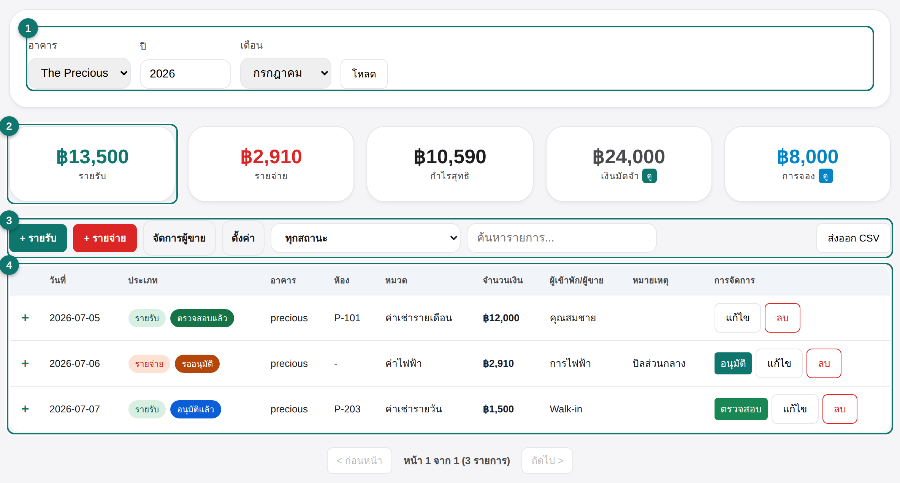
- ตัวเลือกด้านบน — เลือกอาคาร ปี เดือน แล้วกด โหลด เพื่อดึงข้อมูล
- การ์ดสรุป — รายรับ รายจ่าย กำไรสุทธิ เงินมัดจำที่ถืออยู่ และการจองที่รอเช็คอิน (กดการ์ด เงินมัดจำ หรือ การจอง เพื่อดูรายละเอียด)
- แถบเครื่องมือ — ปุ่ม + รายรับ / + รายจ่าย จัดการผู้ขาย กรองตามสถานะ ค้นหา และส่งออก CSV
- ตารางรายการ — ทุกรายการของเดือน กดเครื่องหมาย + หน้าแถวเพื่อดูรายการย่อย
ป้ายสถานะสีต่าง ๆ บอกขั้นตอนของรายการ: รออนุมัติ → อนุมัติแล้ว → ตรวจสอบแล้ว
ส่วน การจอง (สีฟ้า) คือเงินมัดจำที่ยังรอผู้เข้าพักมาเช็คอิน
กดปุ่ม + รายรับ เพื่อบันทึกเงินที่รับเข้ามา เช่น ค่าเช่า ค่ามัดจำ ค่ารายวัน หรือค่าบริการอื่น ๆ
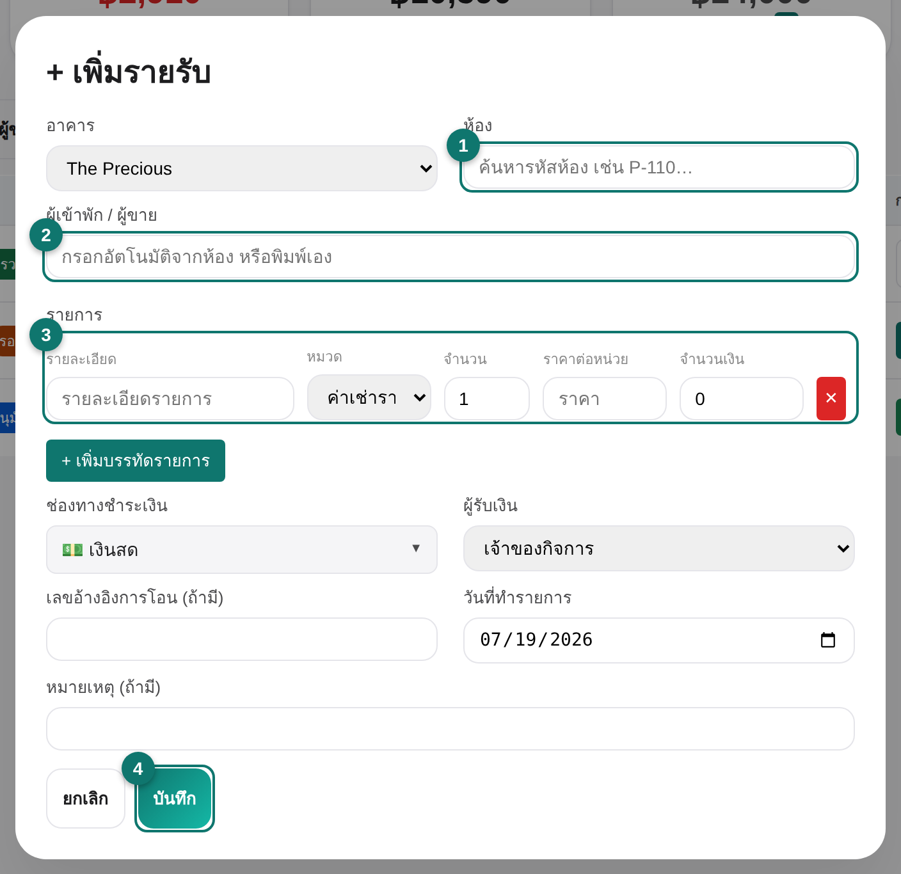
- ห้อง — พิมพ์รหัสห้อง (เช่น P-101) แล้วเลือกจากรายการ หรือเลือก Walk-in ถ้าไม่มีห้อง ระบบจะดึงเฉพาะห้องที่มีจริงเพื่อไม่ให้กรอกผิด
- ผู้เข้าพัก / ผู้ขาย — เติมอัตโนมัติจากห้องที่เลือก หรือพิมพ์เอง
- รายการ — ใส่รายละเอียด เลือกหมวด จำนวน และราคา กด + เพิ่มบรรทัดรายการ ได้หลายบรรทัด
- บันทึก — เลือกช่องทางชำระเงิน ผู้รับเงิน วันที่ แล้วกด บันทึก
หมายเหตุ: ทุกบรรทัดต้องมีรายละเอียดและจำนวนเงินมากกว่า 0 มิฉะนั้นระบบจะไม่ให้บันทึก
3
บันทึกรายจ่าย (VAT / หัก ณ ที่จ่าย)Add expense · VAT / WHT
กดปุ่ม + รายจ่าย ฟอร์มจะคล้ายรายรับ แต่มีส่วนคำนวณ VAT และ ภาษีหัก ณ ที่จ่าย เพิ่มเข้ามา
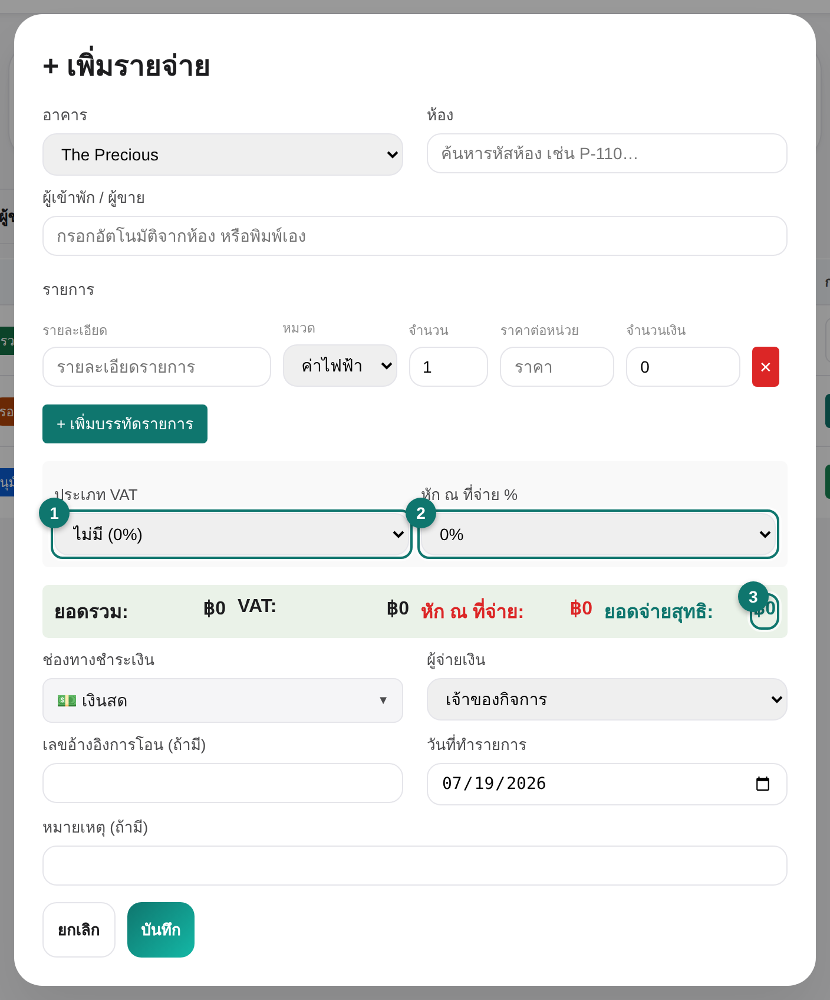
- ประเภท VAT — เลือก ไม่มี / รวมภาษี (7%) (ราคารวม VAT แล้ว) / แยกภาษี (+7%) (บวก VAT เพิ่มจากราคา)
- หัก ณ ที่จ่าย % — เลือกอัตราภาษีที่ต้องหัก (0–5%) ตามประเภทค่าใช้จ่าย
- ยอดจ่ายสุทธิ — ระบบคำนวณ ยอดรวม, VAT, ภาษีหัก ณ ที่จ่าย และ ยอดจ่ายสุทธิ ให้อัตโนมัติ
ระบบใช้สูตรมาตรฐาน: สำหรับ รวมภาษี จะถอด VAT ออกจากยอด (× 100 ⁄ 107) ก่อนคำนวณภาษีหัก ณ ที่จ่าย
ยอดจ่ายสุทธิคือยอดที่จ่ายจริงหลังหักภาษี ณ ที่จ่ายแล้ว
4
อนุมัติและตรวจสอบรายการApprove & verify
รายการที่เพิ่งบันทึกจะอยู่สถานะ รออนุมัติ กดปุ่ม อนุมัติ ในแถวเพื่อยืนยันการรับ/จ่ายเงินจริง
จากนั้นเจ้าของกิจการจะกด ตรวจสอบ เป็นขั้นสุดท้าย
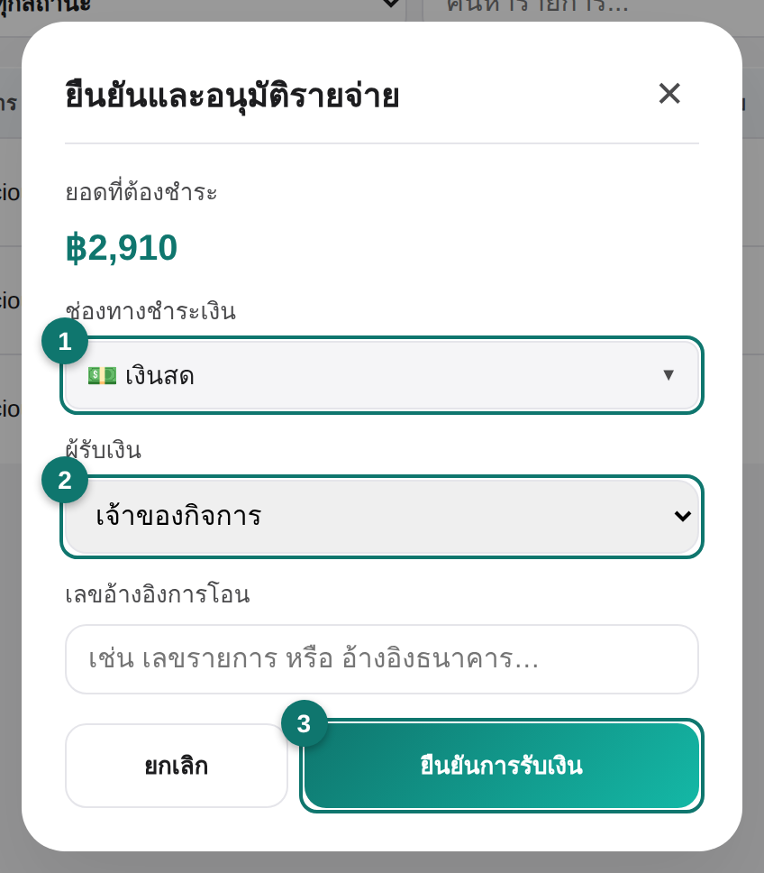
- ช่องทางชำระเงิน — ยืนยันว่าเงินเข้า/ออกทางไหน (เงินสด, KB, SCB, แม่มณี, Kshop)
- ผู้รับเงิน — เลือกพนักงานที่รับหรือจ่ายเงินจริง
- ยืนยัน — กดปุ่มยืนยัน รายการจะเปลี่ยนเป็น อนุมัติแล้ว (และ ตรวจสอบแล้ว เมื่อเจ้าของตรวจ)
ลำดับสิทธิ์: ผู้ดูแลรายรับอนุมัติได้เฉพาะรายรับ ผู้ดูแลรายจ่ายอนุมัติได้เฉพาะรายจ่าย
ส่วนขั้น ตรวจสอบ ทำได้เฉพาะเจ้าของกิจการเท่านั้น
5
ออกใบเสร็จและใบแจ้งหนี้Receipt & invoice
เปิดรายการรายรับด้วยปุ่ม แก้ไข ถ้ายังไม่เคยออกใบเสร็จ ส่วน ออกใบเสร็จรับเงิน จะปรากฏขึ้น
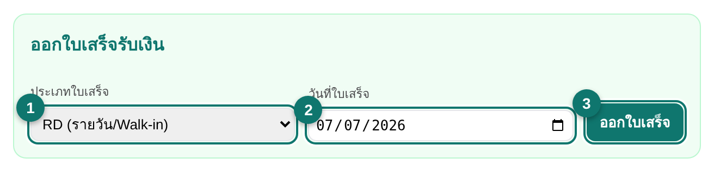
- ประเภทใบเสร็จ — RR ค่าเช่า/รายเดือน · RD รายวัน/Walk-in · RA เงินมัดจำ
- วันที่ใบเสร็จ — วันที่ที่จะพิมพ์บนใบเสร็จ
- ออกใบเสร็จ — กดเพื่อสร้างเลขที่ใบเสร็จ จากนั้นปุ่ม พิมพ์ใบเสร็จ จะปรากฏ
ถ้ารายการมีทั้ง ค่าเช่า และ เงินมัดจำ รวมกัน จะมีปุ่ม ออกและแยก (ค่าเช่า + มัดจำ)
เพื่อออกใบเสร็จแยกสองใบให้ถูกต้องตามบัญชี ส่วน ออกใบแจ้งหนี้แบบเต็ม ใช้สำหรับลูกค้าที่ต้องการใบแจ้งหนี้เต็มรูปแบบ
6
คืนเงินมัดจำเมื่อย้ายออกDeposit refund & move-out
กดการ์ด เงินมัดจำ ด้านบนเพื่อดูเงินมัดจำที่ยังไม่ได้คืน แล้วกด คืนเงิน ในแถวของผู้เช่าที่ย้ายออก
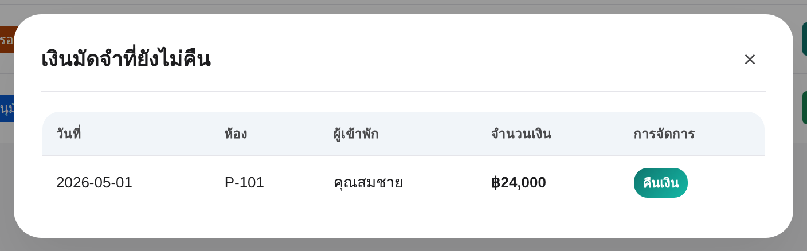
หน้าต่าง ดำเนินการย้ายออก ให้คุณหักค่าใช้จ่ายต่าง ๆ ออกจากเงินมัดจำ แล้วคำนวณเงินที่ต้องคืนผู้เช่า
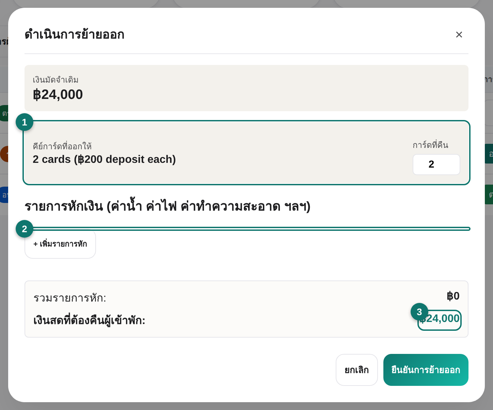
- คีย์การ์ด — กรอกจำนวนการ์ดที่ผู้เช่าคืน ระบบหักค่าการ์ดที่ไม่ได้คืนให้อัตโนมัติ
- รายการหักเงิน — เพิ่มค่าน้ำ ค่าไฟ ค่าทำความสะอาด หรือค่าเสียหายที่ต้องหัก
- ยอดสุทธิ — ระบบแสดง เงินสดที่ต้องคืนผู้เข้าพัก (หรือ ค้างชำระ ถ้าหักเกินมัดจำ)
อย่าลืม: หลังคืนเงินสดให้ผู้เช่า ควรบันทึกเป็นรายการ รายจ่าย ด้วย เพื่อให้ยอดเงินสดตรงกับบัญชี
7
การจองที่รอเช็คอินReservations waiting
กดการ์ด การจอง ด้านบนเพื่อดูเงินมัดจำการจองที่ยังรอผู้เข้าพักมาเช็คอิน
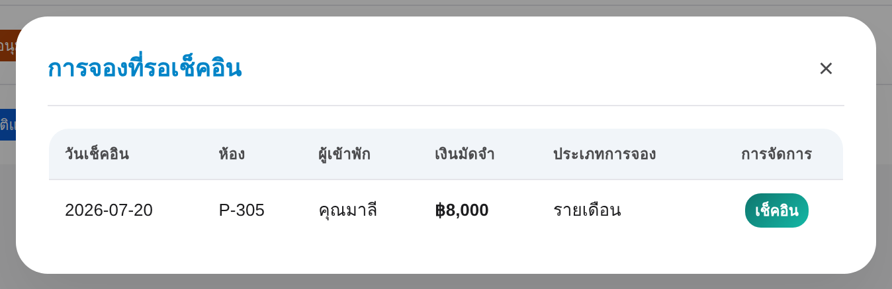
แต่ละแถวแสดงวันเช็คอิน ห้อง ผู้เข้าพัก เงินมัดจำ และประเภทการจอง กดปุ่ม เช็คอิน
เพื่อไปยังหน้า ผังห้องพัก พร้อมเปิดการจองนั้นให้ทันที
8
วางบิลรายเดือนแบบกลุ่มMonthly batch billing
หน้า วางบิล ใช้ออกใบแจ้งหนี้ค่าเช่า-ค่าน้ำ-ค่าไฟให้ผู้เช่ารายเดือนทุกห้องพร้อมกัน
เลือกอาคารและเดือน แล้วกด โหลดห้องที่ใช้งาน
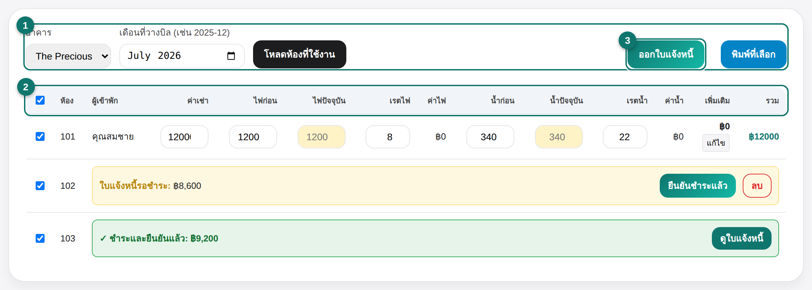
- ตัวเลือกด้านบน — เลือกอาคารและเดือนที่วางบิล แล้วกดโหลด
- ตารางมิเตอร์ — กรอกเลขมิเตอร์ไฟและน้ำปัจจุบันของแต่ละห้อง ระบบคำนวณค่าใช้จ่ายและยอดรวมให้
- ออกใบแจ้งหนี้ — เลือกห้องที่ต้องการ แล้วกดออกใบแจ้งหนี้พร้อมกันทั้งกลุ่ม
ปุ่ม แก้ไข ในคอลัมน์เพิ่มเติมเปิดหน้าต่างใส่รายการพิเศษ (เช่น ค่าซ่อม ค่าทำความสะอาด) ต่อห้อง
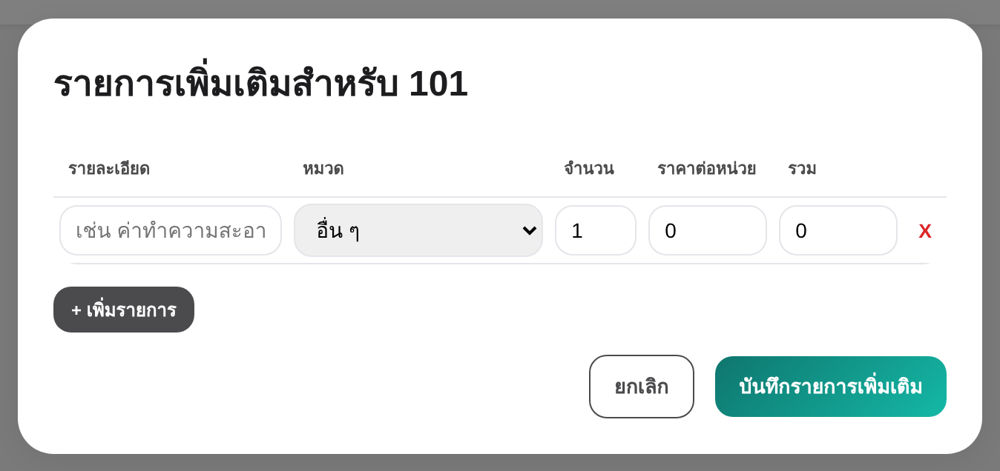
เมื่อผู้เช่าชำระแล้ว กด ยืนยันชำระแล้ว ในแถวนั้น แล้วเลือกช่องทางที่รับเงิน
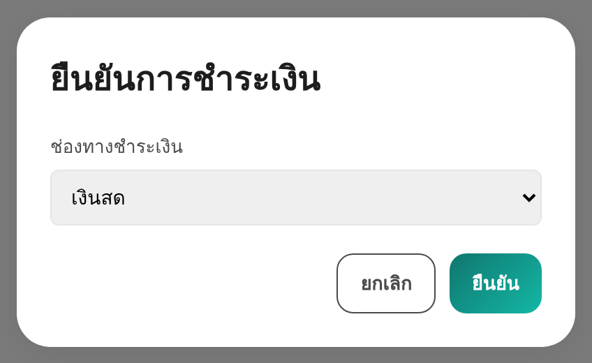
เลขมิเตอร์: ถ้าไม่กรอกเลขมิเตอร์ปัจจุบัน (ช่องจะเป็นสีเหลือง) ใบแจ้งหนี้ห้องนั้นจะคิดค่าน้ำ-ค่าไฟเป็น ฿0
ระบบจะเตือนก่อนออกใบแจ้งหนี้
หลังออกใบแจ้งหนี้ ห้องจะขึ้นสถานะ ใบแจ้งหนี้รอชำระ และเมื่อยืนยันชำระแล้วจะเป็น
ชำระและยืนยันแล้ว ใช้ปุ่ม พิมพ์ที่เลือก หรือ พิมพ์แบบกลุ่ม เพื่อพิมพ์ใบแจ้งหนี้หลายห้องพร้อมกัน